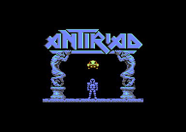
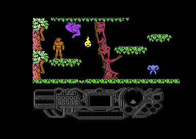

<meta charset="utf-8">
<meta name="viewport" content="width=device-width, initial-scale=1">
<title>The Sacred Armour of Antiriad</title>
<link rel="preconnect" href="https://fonts.googleapis.com">
<link rel="stylesheet" href="https://fonts.googleapis.com/css2?family=Lato:wght@400;700;900&family=IBM+Plex+Mono:wght@400;500&display=swap">
<style>
:root{
  --bg:#23262d; --paper:#e9e7e1; --surface:#ffffff; --surface-2:#f1efea; --line:#d5d3cc; --line-soft:#e0ded8;
  --ink:#2f3136; --ink-soft:#55585f; --ink-mute:#80838a;
  --link:#1f5fa8; --link-hover:#154480; --accent:#1f5fa8;
  --amber:#c25a00; --cyan:#1f5fa8; --coral:#d04a3a; --green:#2a8a4a; --violet:#4a5bd6; --hl:#fff0c2;
  --chip:#2f3136; --chip-ink:#ffffff;
  --c64blue:#40318d; --c64grey:#686868;
  --fd:'Lato',system-ui,sans-serif; --fb:'Lato',system-ui,sans-serif; --fm:'IBM Plex Mono',ui-monospace,Menlo,monospace;
  --col:1080px; --gx:68px; --fs:17px; --lh:1.6; --hw:900; --h1:46px; --h2:26px; --sy:48px; --pp:26px; --r:10px;
  --plate-shadow:0 1px 2px rgba(0,0,0,.05),0 4px 14px rgba(0,0,0,.05);
}
*{box-sizing:border-box}
html{background:var(--bg);min-height:100%}
body{background:var(--paper);color:var(--ink);font-family:var(--fb);font-size:var(--fs);line-height:var(--lh);max-width:var(--col);margin:0 auto;min-height:100vh;padding:0 0 4rem}
h1,h2,h3{font-weight:var(--hw);letter-spacing:-.01em;text-wrap:balance;color:var(--ink);margin:0}
.wrap{padding:0 var(--gx)}
.hero{padding:48px var(--gx) 8px;text-align:left}
.eyebrow{font-family:var(--fm);font-size:12px;letter-spacing:.08em;text-transform:uppercase;color:var(--ink-mute);margin:0 0 10px}
.hero h1{font-size:var(--h1);line-height:1.15;letter-spacing:-.02em;margin:0 0 14px}
.hero .sub{margin:0 0 .6em;color:var(--ink-soft)}
section{padding:var(--sy) 0 24px}
section:last-of-type{border-bottom:none}
.fig{font-family:var(--fm);font-size:12px;letter-spacing:.08em;text-transform:uppercase;color:var(--ink-mute);margin:0 0 10px}
h2.t{font-size:var(--h2);margin-bottom:12px}
.lede{color:var(--ink-soft);margin:0 0 30px}
.plate{background:var(--surface);border:1px solid var(--line);border-radius:var(--r);padding:var(--pp);box-shadow:var(--plate-shadow)}
.cap{font-size:14px;color:var(--ink-mute);margin-top:14px;line-height:1.55}
.cap b{color:var(--ink);font-weight:700}
code{font-family:var(--fm);font-size:.82em;background:var(--chip);color:var(--chip-ink);border-radius:4px;padding:2px 6px;white-space:nowrap}


.an-cv{display:block;width:100%;height:auto;image-rendering:pixelated;background:#000;border-radius:4px}
.an-stack{position:relative}
.an-stack canvas+canvas{position:absolute;left:0;top:0;background:transparent}
.an-bar{display:flex;flex-wrap:wrap;gap:8px;margin:0 0 14px}
.an-btn{font:inherit;font-family:var(--fm);font-size:12.5px;background:var(--surface);border:1px solid var(--line);border-radius:6px;padding:5px 11px;color:var(--ink);cursor:pointer;line-height:1.3}
.an-btn:hover{border-color:var(--ink-mute)}
.an-btn[aria-pressed="true"]{background:var(--accent);border-color:var(--accent);color:#fff}
.an-out{font-size:15px;color:var(--ink);margin:12px 0 0;min-height:3em;line-height:1.55}
.an-out b{font-weight:700}
.an-two{display:grid;grid-template-columns:minmax(0,1fr) minmax(0,1fr);gap:22px;align-items:start}
.an-pics{display:grid;grid-template-columns:minmax(0,1fr) minmax(0,1fr);gap:14px}
.an-pics figure{margin:0}
.an-pics img{display:block;width:100%;height:auto;image-rendering:pixelated;border-radius:4px}
.an-pics figcaption{font-size:13px;color:var(--ink-mute);margin-top:6px}
.an-tbl{border-collapse:collapse;font-size:14px;width:100%;margin:4px 0 0}
.an-tbl th,.an-tbl td{text-align:left;vertical-align:top;padding:5px 8px;border-bottom:1px solid var(--line-soft)}
.an-tbl th{font-weight:700;color:var(--ink-soft)}
.an-tbl td.an-n{font-family:var(--fm);font-size:13px;white-space:nowrap}
.an-tbl tr.an-sel td{background:var(--hl)}
.an-wrapx{overflow-x:auto}
.an-grid{display:grid;grid-template-columns:repeat(auto-fill,minmax(64px,1fr));gap:6px}
.an-grid button{background:#000;border:2px solid transparent;border-radius:5px;padding:4px;cursor:pointer;display:flex;align-items:center;justify-content:center;min-height:64px}
.an-grid button[aria-pressed="true"]{border-color:var(--amber)}
.an-grid canvas{image-rendering:pixelated;max-width:100%}
.an-world{display:grid;grid-template-columns:repeat(15,minmax(0,1fr));gap:2px;margin:0 0 6px}
.an-world button,.an-world span{aspect-ratio:8/5;border:0;border-radius:2px;padding:0;font-family:var(--fm);font-size:9px;color:#fff;cursor:pointer;min-width:0}
.an-world span{background:transparent;cursor:default}
.an-world button[aria-pressed="true"]{outline:2px solid var(--ink);outline-offset:1px}
.an-key{display:flex;flex-wrap:wrap;gap:6px 16px;font-size:13px;color:var(--ink-soft);margin:8px 0 0}
.an-key i{display:inline-block;width:11px;height:11px;border-radius:2px;margin-right:6px;vertical-align:-1px}
.an-strip{display:block;width:100%;max-width:528px;height:auto;image-rendering:pixelated;background:#000;border-radius:4px;margin:0 0 10px}
.an-mono{font-family:var(--fm);font-size:13px}
.an-sprite{display:flex;gap:18px;align-items:flex-end;flex-wrap:wrap}
.an-sprite canvas{image-rendering:pixelated;background:#000;border-radius:4px}
@media (max-width:720px){.an-two,.an-pics{grid-template-columns:1fr}.an-world button,.an-world span{font-size:0}}
</style>
<!-- tabs -->
<header class="hero">
  <p class="eyebrow">1986 · Palace Software</p>
  <h1>The Sacred Armour of Antiriad</h1>
  <p class="sub">In its 69 rooms the game never looks at a shape to decide what is solid: it reads the colour of each cell to decide what Tal can stand on, walk through or get hurt by. The music is tuned for an American C64, and every sound in the game comes from the same driver as the title tune.</p>
</header>
<main class="wrap">

<section id="game">
  <p class="fig">01 · The game</p>
  <h2 class="t">Tal and the Sacred Armour</h2>
  <p class="lede">Long after a nuclear war, aliens have come out of an old volcano and set Tal's people to work in their mines. Tal is sent to find the Sacred Armour of Antiriad, an anti-radiation suit from before the war, and use it to destroy the aliens' power centre.</p>
  <div class="plate">
    <div class="an-pics">
      <figure><figcaption>The title screen.</figcaption></figure>
      <figure><figcaption>The first room of a new game, with the status panel below.</figcaption></figure>
    </div>
  </div>
  <p>The world is 69 rooms, one screen each, joined left, right, up and down. Tal starts on foot at one end of the bottom row of rooms, with stones to throw and five lives. The armour stands empty in room <code>$3F</code>, further along the same row. The first time he climbs into the armour, the suit wakes, the status panel lights up, and from then on he can pick up recharge cells for the suit's energy and four add-ons.</p>
  <p>The add-ons are what make the suit useful. The Gravity Displacer lets it fly, the Pulsar Beam lets it shoot, and the Particle Negator shields it in the two rooms at the top of the world. The fourth, the Implosion Mine, destroys the power centre in the topmost room, which ends the game.</p>
</section>

<section id="music">
  <p class="fig">02 · The title tune</p>
  <h2 class="t">Music: the title tune changes speed twice</h2>
  <p class="lede">Richard Joseph's title music is three tunes played one after another, each at its own tempo.</p>
  <div class="plate">
    <div id="an-music"></div>
    <p class="cap">The page runs the game's own sound driver, its code and tables from the listing (<code>$AFC5</code>-<code>$C1A9</code>, the instruments at <code>$F7C9</code>-<code>$FBAA</code>), on the kit's 6502, called from the two timers as the game sets them, and plays what it writes through a model of the SID. <code>test_music.js</code> checks every write of 60 seconds of each button against the same driver run on the simulator over the game's whole memory. The tempo matches the emulator, where the first part took 826 steps in 19.66 million cycles; the effects timer runs about half a per cent fast here, most likely because on the machine the raster interrupt can run inside the music routine and hold it back, which the player leaves out.</p>
  </div>
  <p>The driver is called from two of CIA 1's timers instead of once a frame. Timer B is the tempo: each time it runs out, <code>music_tick</code> (<code>$AFC5</code>) moves each of the three voices one step through its track. Timer A runs out 98.5 times a second, and <code>sound_tick</code> (<code>$B47D</code>) then works each instrument's pitch slides, note steps and pulse sweeps and copies the game's own copy of the SID's registers (<code>$022F</code>) into the chip.</p>
  <p>Before each part of the title tune starts, the game stores a new value in timer B's latch, which is the whole of a change of tempo.</p>
  <table class="an-tbl">
    <tr><th>Music</th><th>Timer B latch</th><th>Steps a second</th><th>Set by</th></tr>
    <tr><td>Title, part 1</td><td class="an-n">$5D01</td><td class="an-n">41.4</td><td><code>title_tune_part1</code></td></tr>
    <tr><td>Title, part 2</td><td class="an-n">$4359</td><td class="an-n">57.1</td><td><code>title_tune_part2</code></td></tr>
    <tr><td>Title, part 3</td><td class="an-n">$411A</td><td class="an-n">59.1</td><td><code>title_tune_part3</code></td></tr>
    <tr><td>Everything in play</td><td class="an-n">$5161</td><td class="an-n">47.3</td><td><code>title_sequence</code></td></tr>
  </table>
  <p>Each voice plays a track, a list of notes below <code>$C0</code> and commands that set a duration, a filter, an instrument, a hold, a restart or a stop (<code>track_command</code>). The title moves on to its next part when voice 1's track ends. After the third part it waits for voice 2's instead, and then starts again from the first.</p>
  <p>In play the tempo stays at 47.3 steps a second. The short tunes heard in the game, the suit waking, the panel powering up, a life restored and the ending, are tracks of the same driver.</p>
</section>

<section id="screen">
  <p class="fig">03 · The screen</p>
  <h2 class="t">Two character sets share one screen</h2>
  <p class="lede">The playfield and the status panel are both drawn in characters on the same screen at <code>$4000</code>. The raster interrupt changes the character set and the colours where the panel begins, and again at the bottom of the frame.</p>
  <div class="plate">
    <div class="an-bar" id="an-bands"></div>
    <div class="an-stack"><canvas id="an-frame" class="an-cv" width="384" height="272"></canvas><canvas id="an-frame-hi" class="an-cv" width="384" height="272"></canvas></div>
    <p class="an-out" id="an-band-out"></p>
    <p class="cap">One frame in room <code>$2B</code> with the suit worn, recorded in the emulator and drawn here from the screen at <code>$4000</code>, the two character sets, colour RAM, the sprites and every register the game wrote during the frame, by the site's renderer. All 104,448 pixels of the drawing match the emulator's own picture of the frame.</p>
  </div>
  <p>The interrupt comes three times a frame (<code>raster_bands</code>, <code>$AE92</code>). At line 250, in the bottom border, it sets up the playfield for the next frame and then runs the game's work for the frame: the timers, Tal's joystick, the creatures' paths and animations, the collisions and the Q key. At line 50, as the playfield starts, it scrolls the message strip and rolls the score. At line 178 it switches to the panel.</p>
  <p>The playfield's character set is rebuilt for every room (section 04), so one screen code draws jungle in one room and rock in another. The panel keeps its own set at <code>$7000</code>. The message strip and the score's digits are characters in that set whose shapes the game rewrites as they move: the strip scrolls two pixels a frame, and each digit rolls up to the next like an odometer.</p>
</section>

<section id="rooms">
  <p class="fig">04 · The rooms</p>
  <h2 class="t">Each room borrows a strip from both neighbours</h2>
  <p class="lede">A room is eight tiles across and four down, and each side of the screen shows one column of tiles from the room next door, so neighbouring screens overlap by 64 pixels.</p>
  <div class="plate">
    <div class="an-bar" id="an-room-bar"></div>
    <canvas id="an-room" class="an-cv" width="640" height="256"></canvas>
    <p class="an-out" id="an-room-out">Click a tile to see where it comes from.</p>
    <p class="cap">Room <code>$2B</code>, the one in the frame above, drawn from the listing by a port of <code>build_room</code> (<code>$852C</code>). <code>test_rooms.js</code> checks the screen, colour RAM, every character's shape and the multicolours of all 69 rooms against the routine itself run on the simulator, and the sprites against <code>place_room_sprites</code>. Here the monkey's characters show the first picture of their animation. <a href="levels.html">Maps / levels</a> draws every room.</p>
  </div>
  <p>The map of a room is 32 bytes at <code>$0B00</code> plus 32 times its number: four rows of eight tile numbers. A tile is 16 character codes, four by four, from the 256 tiles at <code>$1400</code>. <code>build_room</code> draws the room's tiles into screen columns 4 to 35, then the last tile column of the room to the left into columns 0 to 3 and the first of the room to the right into columns 36 to 39 (<code>draw_edge_column</code>).</p>
  <p>The tiles name character codes, and the shapes behind the codes change from room to room. Each room picks one of nine character lists (<code>room_charset</code>, <code>$F761</code>), and a list copies runs of shapes and their colours out of a pool of 748 at <code>$2400</code> into the playfield's character set at <code>$7800</code>. The neighbours' lists are loaded first, so their strips keep their own shapes, and then the room's own.</p>
  <p>The colours come with the shapes: each of the pool's shapes has one colour, and <code>colour_room</code> (<code>$869C</code>) writes it into colour RAM for every cell that uses the shape. A room has two more colours of its own for its multicolour characters (<code>room_mc_colours</code>, <code>$F71C</code>), and nineteen rooms have none, so they are drawn in high resolution.</p>
</section>

<section id="solid">
  <p class="fig">05 · Walls and floors</p>
  <h2 class="t">The colour of a cell decides whether it is solid</h2>
  <p class="lede">The game never looks at a character's shape to see whether Tal can stand on it. It reads the cell's colour in colour RAM and looks it up in three short tables.</p>
  <div class="plate">
    <div class="an-bar" id="an-solid-rooms"></div>
    <div class="an-bar" id="an-solid-bar"></div>
    <canvas id="an-solid" class="an-cv" width="640" height="256"></canvas>
    <p class="an-out" id="an-solid-out"></p>
    <p class="cap">Each room as <code>build_room</code> leaves it, with every cell marked by what its colour-RAM nibble does in <code>open_colours_floor</code> (<code>$CE12</code>), <code>open_colours_wall</code> (<code>$CE1C</code>) and <code>hazard_colours</code> (<code>$CE2C</code>).</p>
  </div>
  <p>Ten colours let Tal and the suit pass up or down through a cell, and every other colour stops a fall or a climb (<code>check_floor</code>, <code>check_head</code>). Twelve colours let him pass sideways, and the other four stop a walk (<code>wall_left</code>). Colour 5, the green of the leaves in the high-resolution rooms, is in the second table and not the first, so a branch there holds Tal up and lets him walk through it.</p>
  <table class="an-tbl">
    <tr><th>Colour-RAM nibble</th><th>Stops a fall</th><th>Stops a walk</th><th>Hurts</th></tr>
    <tr><td class="an-n">0-2, 9, 12, 14</td><td>no</td><td>no</td><td>no</td></tr>
    <tr><td class="an-n">3, 6</td><td>no</td><td>no</td><td>4 a touch</td></tr>
    <tr><td class="an-n">4, 15</td><td>no</td><td>no</td><td>8 a touch</td></tr>
    <tr><td class="an-n">5, 11</td><td>yes</td><td>no</td><td>no</td></tr>
    <tr><td class="an-n">7, 8, 10, 13</td><td>yes</td><td>yes</td><td>no</td></tr>
  </table>
  <p>The four colours that hurt are open in both directions: Tal can walk into a thorn. In the character lists they belong to the thrusting thorns, the monkey, the dragons' fire and most of the machine gunner. A touch costs Tal 4 or 8 energy, or the suit half of that, a quarter with the Particle Negator, and the game waits 25 frames before the next touch counts (<code>scenery_hits</code>). The game skips the check in room <code>$00</code>, at the top of the world.</p>
  <p>The tables hold the whole nibble of colour RAM, with the bit that marks a multicolour character. That bit is bit 3, so in a multicolour room the nibble 15 is a shape in yellow and the room's two colours, and 13 a shape in green.</p>
</section>

<section id="sound">
  <p class="fig">06 · The effects</p>
  <h2 class="t">Sound: every effect is a track of the music driver</h2>
  <p class="lede">Footsteps, stones, the Geiger counter and the typing of the panel's messages are tracks like the title tune's, asked of one voice each.</p>
  <div class="plate">
    <div id="an-sfx"></div>
    <p class="cap">The same driver on the same 6502 at the tempo of play, each button asking the voice the game asks for that track. <code>test_music.js</code> checks these as well. The footstep, Tal's fall and a creature's death are pitched far down, between 16 and 170 Hz, which laptop and phone speakers barely play. The typing and the power centre's drone repeat until the game stops them.</p>
  </div>
  <p>A sound is asked for by putting a track number in a voice's request byte (<code>$035E</code>-<code>$0360</code>), and the next tick of timer B starts it (<code>start_requests</code>).</p>
  <p>Each voice has its own sounds. Voice 1 plays Tal's footsteps and the suit's hum, voice 2 the effects of stones, shots, creatures and pick-ups (<code>play_effect</code>), and voice 3 the Geiger counter's clicks and the typing as each letter of a message appears. The power centre's drone plays on voice 2 and is the only sound that uses the filter. While the drone plays, <code>play_effect</code> drops every effect asked of voice 2.</p>
  <p>While the suit is waking for the first time, the driver starts a request only when voice 1's is one of the three activation tunes (<code>activation_tracks</code>, <code>$C605</code>), and then starts the other voices' requests with it. Every other sound waits until the panel has powered up.</p>
</section>

<section id="tal">
  <p class="fig">07 · Tal and the suit</p>
  <h2 class="t">Tal turns to face you before he walks the other way</h2>
  <p class="lede">What the joystick does depends on Tal's picture. Left and right turn him one view at a time through facing the player before he walks, and fire does nothing at all while he faces you.</p>
  <div class="plate">
    <div class="an-bar" id="an-tal-bar"></div>
    <div class="an-sprite"><canvas id="an-tal" width="144" height="126"></canvas><p class="an-out" id="an-tal-out"></p></div>
    <p class="cap">Tal and the suit are two sprites each, one above the other, run from the animations at <code>anim_ptrs</code> (<code>$FCA6</code>) at the game's speed of 50 frames a second, in the shared multicolours the game sets on foot and in the suit.</p>
  </div>
  <p>The joystick is read every seventh frame, and not at all while Tal is jumping, falling, dissolving or appearing (<code>tal_control</code>). On foot (<code>foot_control</code>), up from a side view jumps straight up, fire while walking jumps that way, fire while standing throws a stone if the last one has landed, and down crouches. Crouching is how he picks things up.</p>
  <p>Facing the player is the only view in which he can climb into the armour or use the teleporter (<code>tal_touches</code>).</p>
  <p>In the suit (<code>suit_control</code>), up takes off only with the Gravity Displacer fitted, left and right turn and then speed up to 3 pixels a frame, and fire shoots the Pulsar Beam if it is fitted. Left or right on the ground climbs out, except in the ten rooms of the top five rows, where the radiation is highest.</p>
</section>

<section id="panel">
  <p class="fig">08 · The panel</p>
  <h2 class="t">The panel's messages run on into one another</h2>
  <p class="lede">The panel scrolls 22 messages through an eleven-letter strip. A message ends by stopping, by starting again, or by naming the message that follows it.</p>
  <div class="plate">
    <div class="pick"><button class="step" data-d="-1" aria-label="Previous message">‹</button><select id="an-msg" aria-label="Message"></select><button class="step" data-d="1" aria-label="Next message">›</button></div>
    <canvas id="an-strip" class="an-strip" width="264" height="24"></canvas>
    <p class="an-out" id="an-msg-out"></p>
    <p class="cap">The messages from <code>message_ptrs</code> (<code>$C1AA</code>), scrolled as <code>scroll_message</code> (<code>$AA68</code>) scrolls them, two pixels a frame, in the panel's letters from its character set at <code>$7000</code> and the strip's colour.</p>
  </div>
  <p>The text is plain ASCII. Each letter becomes a panel character (code + <code>$5B</code>), and every fourth frame the next one is copied into a buffer at <code>$0672</code> and rolled into the strip's eleven characters a pixel at a time (<code>shift_message</code>). With each new letter, voice 3 types it if it is free.</p>
  <p>"YOU HAVE THREE" and "YOU HAVE TWO" both end by naming message <code>$94</code>, " REJUVENATIONS REMAINING", and most messages go on to <code>$92</code>, eleven spaces, which scroll the last words out of the strip.</p>
  <p>The game-over and ending messages start again from the top until fire is pressed, and an add-on picked up on foot repeats its message until Tal is back in the suit (<code>addon_message</code>).</p>
</section>

<section id="creatures">
  <p class="fig">09 · The creatures</p>
  <h2 class="t">A creature's damage is four times its hit points</h2>
  <p class="lede">The game keeps one number for how hard a creature hits Tal and works out from it how many hits the creature takes to kill.</p>
  <div class="plate">
    <div class="an-grid" id="an-crit"></div>
    <p class="an-out" id="an-crit-out"></p>
    <p class="cap">The 25 animations in <code>enemy_anims</code> (<code>$C618</code>), each with its points (<code>enemy_points</code>, <code>$C631</code>) and damage (<code>enemy_damage</code>, <code>$C64A</code>), drawn from their animations in the shared multicolours of Tal on foot.</p>
  </div>
  <p>When a room is built, each creature's hit points are its damage divided by four (<code>set_enemy_stats</code>): 2 for one that takes 8 energy on contact, 1 for one that takes 4. A stone takes one hit point and a Pulsar Beam shot two (<code>sprite_hits</code>), so the creatures that hurt most take two stones or one shot, and the rest one of either.</p>
  <p>A creature that touches Tal takes its damage from his energy, or half of it from the suit's, a quarter with the Particle Negator, and then dies, scoring its points. Sixteen animations cannot die: the drops and their splashes, the bomb-thrower, the empty armour, the recharge cells, the add-ons and the teleporter (<code>unkillable_anims</code>, <code>$C608</code>). A drop that splashes on the floor appears again where it started and falls again (<code>spawn_enemy</code>), so it costs 4 energy on every frame it touches Tal, for ever.</p>
  <p>The round striped creature holds back everything listed after it in its room, and a stone kill pays double (<a href="discoveries.html">Discoveries</a>).</p>
</section>

<section id="radiation">
  <p class="fig">10 · Radiation</p>
  <h2 class="t">The higher Tal climbs, the faster radiation drains him</h2>
  <p class="lede">Every room has a radiation level from 0 to 3, set by how high it is. Out of the suit, Tal loses that much energy every second.</p>
  <div class="plate">
    <div class="an-world" id="an-world"></div>
    <div class="an-key" id="an-world-key"></div>
    <div class="an-two" style="margin-top:14px">
      <canvas id="an-rad-room" class="an-cv" width="320" height="128"></canvas>
      <div class="an-sprite"><canvas id="an-meter" width="72" height="63"></canvas><p class="an-out" id="an-rad-out"></p></div>
    </div>
    <p class="cap">The rooms on the C64-Wiki's grid, columns A to O and rows 1 to 14, coloured by <code>room_radiation</code> (<code>$F7A6</code>), with the meter's sprite picture for the level (<code>$70</code> plus 3 minus the level, <code>panel_sprites</code>) and the wait between Geiger clicks (<code>radiation_click_waits</code>, <code>$06B4</code>).</p>
  </div>
  <p>Tal's energy runs from 0 to 31. On foot he loses the room's level every 50 frames (<code>energy_tick</code>), so level 3 empties him in about ten seconds. In the suit he gains a point every 100 frames and cannot die, and the suit's own energy is not spent on it. The suit loses energy only to creatures and harmful scenery, and 2 points every 100 frames in room <code>$00</code>.</p>
  <p>The two rooms at the top, <code>$00</code> and <code>$01</code>, empty the suit's energy as Tal enters them unless the Particle Negator is fitted (<code>room_change</code>), and in the top ten rooms the suit will not let him out (<code>leave_armour</code>).</p>
  <p>The meter on the panel shrinks from a full ring at level 3 to a sliver at level 0, and the red warning lamp beside it lights only at level 3.</p>
</section>

<section id="ending">
  <p class="fig">11 · The ending</p>
  <h2 class="t">The mine goes off only on top of one pole</h2>
  <p class="lede">The power centre is room <code>$00</code>. The Implosion Mine is set off by landing the suit on the cap of the lower pole of its force field, three characters wide.</p>
  <div class="plate">
    <canvas id="an-end" class="an-cv" width="640" height="256"></canvas>
    <p class="cap">Room <code>$00</code> drawn as in section 04, with the three cells <code>check_detonation</code> (<code>$9850</code>) looks for marked: screen codes <code>$C9</code>-<code>$CB</code> at row 12, columns 18 to 20.</p>
  </div>
  <p>While the suit stands on the ground, <code>check_detonation</code> reads the screen code in the cell below and to the right of Tal. When it is one of the three in <code>detonator_chars</code> (<code>$CE30</code>) and the Implosion Mine is fitted, it starts message <code>$93</code>, "IMPLOSION MINE DETONATION SEQUENCE INITIALIZED", which counts down from FIVE to ZERO as it scrolls. When the message has gone, the ending tune plays, the playfield's characters dissolve in nine steps with the border flashing, and the panel repeats "THE OPPRESSORS ARE DEFEATED YOUR RACE IS FREE" until fire starts a new game (<code>victory_sequence</code>).</p>
  <p>There is no clock. The game ends only three ways: the mine, fire after the fifth death, and Q.</p>
</section>

</main>
<footer style="margin:16px 0 0;padding:22px var(--gx) 0;border-top:1px solid #e0ded8;font-family:'IBM Plex Mono',ui-monospace,Menlo,monospace;font-size:12px;color:#80838a"><a href="https://github.com/gamesexplained/gamesexplained" style="color:#1f5fa8;text-decoration:none">GitHub</a> · <a href="https://discord.gg/3V9GWyRDWV" style="color:#1f5fa8;text-decoration:none">Discord</a><br>© Games Explained contributors. Write-ups, facts and symbol maps are available under <a href="https://creativecommons.org/licenses/by-sa/4.0/" style="color:#1f5fa8;text-decoration:none">CC BY-SA 4.0</a>; code under <a href="https://opensource.org/licenses/MIT" style="color:#1f5fa8;text-decoration:none">MIT</a></footer>
<script src="../../lib/c64.js"></script>
<script src="../../lib/sid.js"></script>
<script src="../../lib/cpu6502.js"></script>
<script>
/* ant-room */
// The rooms and the title screen, read from the game's memory m (64 KB, as C64.load gives it from
// the listing) and drawn as the game builds them. A room (build_room, $852C) is 4 rows of 8 tile
// numbers at $0B00 + 32 x room; a tile is 4 x 4 character codes at $1400 + 16 x tile, drawn in
// screen columns 4-35, with the left neighbour's last tile column in columns 0-3 and the right
// neighbour's first in 36-39 (draw_edge_column). The shapes come from character lists
// (load_room_chars): room_charset ($F761) picks one of nine at $3F00, each a count of runs of a
// first and a last code and an offset into the shape pool at $2400 (8 bytes a shape) and the
// colour pool at $3C00 (one colour a shape); the left neighbour's list is loaded first, then the
// right's, then the room's own. The animated tiles then show the picture the first step of each
// of the room's scripts copies in (animate_tiles). colour_room ($869C) puts each code's colour in
// colour RAM and the room's two multicolours, room_mc_colours ($F71C), in $D022 (low nibble) and
// $D023 (high); 0 leaves the room in hires. A cell whose colour has bit 3 set is drawn in
// multicolour in a multicolour room. Sprites come from the room's list (room_sprite_ptrs, $CA16):
// a count, then X, Y, the path (bit 7 is X bit 8) and the animation, filled from slot 7 down
// (place_room_sprites), with the entries after a round striped creature held back
// (hold_back_group) and a bomb under a bomb-thrower whose left half is on slot 7 (place_bomber),
// as a new game finds them; an animation's first picture is drawn, the picture at $4000 + 64 x its
// number in bank 1, in the colour and mode of its header (anim_ptrs, $FCA6), with the shared
// sprite multicolours of Tal on foot or in the armour. test_rooms.js holds all of it against
// build_room, place_room_sprites and draw_title_screen run on the kit's 6502.
const ANT = {
  ROOMS: 69,
  w: (m, a) => m[a] | m[a + 1] << 8,
  links: (m, r) => [0, 1, 2, 3].map((k) => m[0xF25A + 4 * r + k]),          // right, left, below, above
  radiation: (m, r) => r & 1 ? m[0xF7A6 + (r >> 1)] & 15 : m[0xF7A6 + (r >> 1)] >> 4,
  charList(m, n) {
    const p = ANT.w(m, 0x3F00 + 2 * n), runs = [];
    for (let k = 0; k < m[p]; k++) runs.push({ first: m[p + 1 + 4 * k], last: m[p + 2 + 4 * k], off: ANT.w(m, p + 3 + 4 * k) });
    return { at: p, runs };
  },
  loadChars(m, r, shapes, colours) {
    for (const { first, last, off } of ANT.charList(m, m[0xF761 + r]).runs)
      for (let c = first; c <= last; c++) {
        shapes.set(m.subarray(0x2400 + 8 * (off + c), 0x2400 + 8 * (off + c) + 8), 8 * c);
        colours[c] = m[0x3C00 + off + c];
      }
  },
  room(m, r) {
    const scr = new Uint8Array(640), shapes = new Uint8Array(2048), colours = new Uint8Array(256);
    const tile = (t, col, row, x0, x1) => {
      for (let y = 0; y < 4; y++) for (let x = x0; x < x1; x++) scr[(4 * row + y) * 40 + 4 * col + x] = m[0x1400 + 16 * t + 4 * y + x];
    };
    for (let row = 0; row < 4; row++) for (let col = 0; col < 8; col++) tile(m[0x0B00 + 32 * r + 8 * row + col], col + 1, row, 0, 4);
    const [right, left] = ANT.links(m, r);
    if (left < 0x80) { for (let row = 0; row < 4; row++) tile(m[0x0B00 + 32 * left + 8 * row + 7], 0, row, 0, 4); ANT.loadChars(m, left, shapes, colours); }
    if (right < 0x80) { for (let row = 0; row < 4; row++) tile(m[0x0B00 + 32 * right + 8 * row], 9, row, 0, 4); ANT.loadChars(m, right, shapes, colours); }
    ANT.loadChars(m, r, shapes, colours);
    for (const t of ANT.tileAnims(m, r)) if (t.pic) shapes.set(m.subarray(t.pic, t.pic + 8 * t.count), t.dest - 0x7800);
    const cram = scr.map((c) => c ? colours[c] & 15 : 0), mc = m[0xF71C + r];
    return { r, scr, shapes, colours, cram, mc, m1: mc & 15, m2: mc >> 4, left, right };
  },
  // the room's animated tiles (room_anim_ptrs, $FBAB: a count, then script numbers from $80), each
  // with the picture its first step copies in as the room is built (animate_tile): a script
  // (tile_anim_ptrs, $06BC) is a wait, the number of characters, the address they go to, then
  // two-byte steps from its third, a picture's address or, below $0300, a command
  tileAnims(m, r) {
    const p = ANT.w(m, 0xFBAB + 2 * r), out = [];
    for (let k = 1; k <= m[p]; k++) {
      let n = m[p + k] & 0x7F, q = ANT.w(m, 0x06BC + 2 * n), step = 3, pic = 0;
      const first = n;
      for (let guard = 0; guard < 16 && !pic; guard++) {
        const lo = m[q + 2 * step], hi = m[q + 2 * step + 1];
        if (hi >= 3) pic = lo | hi << 8;
        else if (lo === 0) step = 3;
        else if (lo === 1) step = m[q + 2 * step + 2] + 3;
        else if (lo === 2) { n = m[q + 2 * step + 2] & 0x7F; q = ANT.w(m, 0x06BC + 2 * n); step = 3; }
        else break;
      }
      out.push({ script: 0x80 | first, at: q, count: m[q + 2], dest: ANT.w(m, q + 4), pic });
    }
    return out;
  },
  sprites(m, r) {
    const p = ANT.w(m, 0xCA16 + 2 * r), out = [];
    for (let k = 0; k < m[p]; k++) {
      const [x, y, path, anim] = m.subarray(p + 1 + 4 * k, p + 5 + 4 * k);
      out.push({ at: p + 1 + 4 * k, slot: 7 - k, x: x + (path & 0x80 ? 256 : 0), y, path: path | 0x80, anim, held: false });
    }
    // hold_back_group: the slots below the first round striped creature, down to 3, wait
    const top = out.findIndex((s) => s.anim === 0xD0 || s.anim === 0xD1);
    if (top >= 0) for (let k = top + 1; k < out.length && out[k].slot >= 3 && out[k].anim !== 0xC0 && out[k].anim !== 0xC1; k++) out[k].held = true;
    // place_bomber: a bomb-thrower's left half on slot 7 puts the bomb on slot 5, 12 right and 18 down
    if (out.length && out[0].anim === 0xC9) out.push({ at: 0, slot: 5, x: out[0].x + 12, y: out[0].y + 18, path: 0xA7, anim: 0xD2, held: false });
    return out;
  },
  anim(m, n) {
    const p = ANT.w(m, 0xFCA6 + 2 * (n - 0x80)), pics = [];
    let i = 2;
    while (i < 64 && m[p + i] >= 0x10) pics.push(m[p + i++]);
    return { at: p, wait: m[p], colour: m[p + 1] & 15, mc: !!(m[p + 1] & 0x80), pics, end: m[p + i], arg: m[p + i + 1] };
  },
  // a sprite picture into px (colour indices, w wide), its top left at (X, Y); colour 0 is clear
  sprite(m, px, w, h, pic, X, Y, colour, mc, mc0 = 8, mc1 = 9) {
    const a = 0x4000 + 64 * pic;
    for (let y = 0; y < 21; y++) for (let x = 0; x < 24; x++) {
      const b = m[a + 3 * y + (x >> 3)];
      const v = mc ? (b >> (6 - 2 * ((x & 7) >> 1))) & 3 : (b >> (7 - (x & 7))) & 1;
      if (!v) continue;
      const c = mc ? [0, mc0, colour, mc1][v] : colour, X1 = X + x, Y1 = Y + y;
      if (X1 >= 0 && X1 < w && Y1 >= 0 && Y1 < h) px[Y1 * w + X1] = c;
    }
  },
  // the playfield, 320 x 128, as colour indices; o.sprites draws the room's list, in the shared
  // multicolours o.mc, [8, 9] on foot as start_new_game sets them, [14, 11] in the armour
  paint(m, R, o = {}) {
    const W = 320, H = 128, px = new Uint8Array(W * H);
    for (let cy = 0; cy < 16; cy++) for (let cx = 0; cx < 40; cx++) {
      const c = R.scr[cy * 40 + cx], col = R.cram[cy * 40 + cx];
      if (!c) continue;
      for (let y = 0; y < 8; y++) {
        const b = R.shapes[8 * c + y], o0 = (cy * 8 + y) * W + cx * 8;
        if (R.mc && col & 8) for (let k = 0; k < 4; k++) {
          const v = (b >> (6 - 2 * k)) & 3;
          if (v) px[o0 + 2 * k] = px[o0 + 2 * k + 1] = [0, R.m1, R.m2, col & 7][v];
        } else for (let k = 0; k < 8; k++) if (b & (0x80 >> k)) px[o0 + k] = R.mc ? col & 7 : col;
      }
    }
    if (o.sprites) for (const s of ANT.sprites(m, R.r)) {
      const a = ANT.anim(m, s.anim);
      if (a.pics.length) ANT.sprite(m, px, W, H, a.pics[0], s.x - 24, s.y - 50, a.colour, a.mc, ...(o.mc || [8, 9]));
    }
    return { w: W, h: H, px };
  },
  // the title screen as draw_title_screen ($8421) leaves it: 19 rows of 26 codes from
  // title_picture ($F52E) at row 3, column 7, colour 2 for codes $EE and up and 11 for the rest;
  // hidden adds the row above them, title_picture_top ($F514), at row 2
  title(m, hidden) {
    const scr = new Uint8Array(1000), cram = new Uint8Array(1000);
    for (let row = hidden ? 2 : 3; row < 22; row++) for (let col = 0; col < 26; col++) {
      const c = m[0xF514 + 26 * (row - 2) + col], i = 40 * row + 7 + col;
      scr[i] = c; cram[i] = c >= 0xEE ? 2 : 11;
    }
    return { scr, cram };
  },
  // a title screen, 320 x 200, as colour indices: the title's characters are the copy of
  // $D000-$D7FF the game puts at $7800, in multicolour with 11 and 14 (title_attract)
  paintTitle(m, T) {
    const W = 320, px = new Uint8Array(W * 200);
    for (let i = 0; i < 1000; i++) {
      const c = T.scr[i], k = T.cram[i], cx = i % 40, cy = (i / 40) | 0;
      if (!k) continue;
      for (let y = 0; y < 8; y++) {
        const b = m[0xD000 + 8 * c + y], o = (cy * 8 + y) * W + cx * 8;
        if (k & 8) for (let j = 0; j < 4; j++) {
          const v = (b >> (6 - 2 * j)) & 3;
          if (v) px[o + 2 * j] = px[o + 2 * j + 1] = [0, 11, 14, k & 7][v];
        } else for (let j = 0; j < 8; j++) if (b & (0x80 >> j)) px[o + j] = k;
      }
    }
    return { w: W, h: 200, px };
  },
  // where the C64-Wiki's map puts each room: a walk of the links from room 0 at H1, columns A-O
  // and rows 1-14; the wiki draws room $06 at K5, past the end of the row its links wrap round
  grid(m) {
    const pos = { 0: [0, 0] }, q = [0], d = [[1, 0], [-1, 0], [0, 1], [0, -1]];
    while (q.length) {
      const r = q.shift(), [x, y] = pos[r], L = ANT.links(m, r);
      for (let k = 0; k < 4; k++) if (L[k] < ANT.ROOMS && !(L[k] in pos)) { pos[L[k]] = [x + d[k][0], y + d[k][1]]; q.push(L[k]); }
    }
    pos[6] = [3, 4];
    return pos;
  },
  place: (p) => String.fromCharCode(72 + p[0]) + (1 + p[1]),
};
// end of ant-room
</script>
<script>
/* ant-music */
// createDriver for C64Sid: runs the game's own sound driver on the kit's 6502 (C64Cpu, from
// ../../lib/cpu6502.js, which sid.js passes to createDriver), its code and tables taken from the
// listing over ANT_DRIVER_RANGES. The game calls it from two of CIA 1's timers: timer B calls
// music_tick ($AFC5), the sequencer, every latch + 1 cycles (the tempo: $5161 in play, and one
// latch for each part of the title tune), and timer A calls sound_tick ($B47D), the effects and the
// copy of the shadow SID into the chip, every 10,001 cycles that timer A runs. music_tick stops
// timer A while it runs ($DC0E = 0, then $81), so timer A falls behind by the cycles between the
// two stores, counted here as the chip counts them. One play() is ANT_STEP cycles of that clock: it
// runs each routine whose timer runs out inside them, timer B's first when both are due, as the
// interrupt handler takes them ($AE6D). Each routine runs whole: on the machine music_tick can
// interrupt sound_tick, which here waits until sound_tick ends. init(t) puts back the driver's bytes
// as loaded, clears the sound as silence_sid ($B43F) does, and asks each voice for its track as the
// game does (music_request, $035E-$0360); the next tick of timer B, at once, starts them.
// A read of a SID register returns the data bus, the last value written.
const ANT_STEP = 1000;
const ANT_DRIVER_RANGES = [[0x002E, 0x0037], [0x0094, 0x00A0], [0x022F, 0x0247], [0x0310, 0x0360],
  [0xAFC5, 0xC1A9], [0xC605, 0xC607], [0xF118, 0xF11F], [0xF36E, 0xF513], [0xF7C9, 0xFBAA]];
const ANT_TUNES = [
  { name: 'Title, part 1', tracks: [0x80, 0x81, 0x82], tempo: 0x5D01 },
  { name: 'Title, part 2', tracks: [0x83, 0x84, 0x85], tempo: 0x4359 },
  { name: 'Title, part 3', tracks: [0x86, 0x87, 0x88], tempo: 0x411A },
  { name: 'The suit wakes', tracks: [0x8C, 0x8D, 0x8E] },
  { name: 'The panel powers up', tracks: [0x8F, 0x90, 0x91] },
  { name: 'Charging', tracks: [0x92, 0x93, 0x94] },
  { name: 'A life restored', tracks: [0xA3, 0xA4, 0xA5] },
  { name: 'The ending', tracks: [0xA8, 0xA9, 0xAA] },
];
const ANT_EFFECTS = [
  { name: 'Footstep', tracks: [0xA0, 0, 0] },
  { name: 'Stone strikes', tracks: [0, 0x89, 0] },
  { name: 'Pulsar Beam', tracks: [0, 0x98, 0] },
  { name: 'Beam sparks', tracks: [0, 0xAD, 0] },
  { name: 'Creature killed', tracks: [0, 0xA2, 0] },
  { name: 'Pick-up', tracks: [0, 0, 0x99] },
  { name: 'Into the armour', tracks: [0x96, 0x97, 0] },
  { name: 'Suit speeds up', tracks: [0x8A, 0, 0] },
  { name: 'Suit slows down', tracks: [0x8B, 0, 0] },
  { name: 'Recharge cell', tracks: [0, 0x93, 0] },
  { name: 'Barrier', tracks: [0, 0xA7, 0] },
  { name: 'Dragon fire', tracks: [0, 0x9A, 0] },
  { name: 'Machine gunner', tracks: [0, 0xAB, 0] },
  { name: 'Thorn', tracks: [0, 0xAC, 0] },
  { name: 'Striped creature', tracks: [0, 0xA6, 0] },
  { name: 'Tal falls dead', tracks: [0xA1, 0, 0] },
  { name: 'Typing', tracks: [0, 0, 0x95] },
  { name: 'Geiger, level 0', tracks: [0, 0, 0x9C] },
  { name: 'Geiger, level 1', tracks: [0, 0, 0x9D] },
  { name: 'Geiger, level 2', tracks: [0, 0, 0x9E] },
  { name: 'Geiger, level 3', tracks: [0, 0, 0x9F] },
  { name: 'Power centre', tracks: [0, 0x9B, 0] },
];
function createDriver(D, C64Cpu) {
  const STEP = D.step, PERIOD_A = 10001;
  const base = new Uint8Array(0x10000);
  for (const [ad, bytes] of D.mem) base.set(bytes, ad);
  const sid = new Uint8Array(25);
  let m, cpu, writes = [], bus = 0, now = 0, tA = 0, tB = 0, pB = 0, stopAt = 0, held = 0;
  const io = {                                                  // the chips at $D000-$DFFF
    read(ad) { if (ad >= 0xD400 && ad < 0xD800) return bus; throw new Error('read $' + ad.toString(16)); },
    write(ad, val, c) {
      if (ad >= 0xD400 && ad < 0xD800) { const r = ad & 0x1F; if (r < 25) { sid[r] = val; writes.push(r, val); } bus = val; return; }
      if (ad === 0xDC0E) { if (val & 1) held += c.cycles - stopAt; else stopAt = c.cycles; return; }   // timer A off, on
      throw new Error('write $' + ad.toString(16));
    },
  };
  const run = (ad) => cpu.call(ad, { a: 0, x: 0, y: 0 }, { maxSteps: 100000 });
  const tracks = () => [0, 1, 2].some((v) => (m[0x0355 + v] | m[0x035E + v]) & 0x80);
  return {
    sid,
    get writes() { return writes; },
    init(t) {
      const c = D.tunes[t];
      m = base.slice(); cpu = new C64Cpu.CPU(m, { port: 0x35, io });
      sid.fill(0); bus = 0;
      run(0xB43F);                                              // silence_sid
      writes = [];
      c.tracks.forEach((n, v) => { if (n) m[0x035E + v] = n; });
      pB = (c.tempo || 0x5161) + 1; now = 0; tA = 0; tB = 0;
    },
    stop() { run(0xB43F); writes = []; },
    play() {
      writes = [];
      const end = now + STEP;
      while (Math.min(tA, tB) < end) {
        if (tB <= tA) { held = 0; run(0xAFC5); tA += held; tB += pB; }   // music_tick
        else { run(0xB47D); tA += PERIOD_A; }                             // sound_tick
      }
      now = end;
    },
    playing: tracks,
    voice(x) { const n = m[0x0355 + x]; return { track: n & 0x80 ? n : 0, at: m[0x032E + 2 * x] | m[0x032F + 2 * x] << 8 }; },
  };
}
// end of ant-music
</script>
<script>
/* ant-frame */
// The frame of the screen section, room $2B with the suit worn, as kit/c64/frame.py recorded and
// trimmed it: the registers at its start, the writes during it, and the bytes the drawing reads.
const ANT_FRAME = {"schema":1,"standard":"PAL","lines":312,"cycles":63,"about":"","vic":[128,64,128,85,0,0,128,64,192,90,182,108,232,74,80,85,0,27,0,0,0,243,200,0,15,112,247,0,35,0,0,0,240,240,249,245,243,254,251,243,243,240,254,243,243,244,253],"cia2":[198,63],"cpu":[7,21],"writes":[[44,58,32690,192],[45,13,32689,248],[45,31,32688,248],[46,4,32686,192],[46,22,32685,192],[46,40,32684,224],[46,58,32683,224],[47,13,32682,231],[47,31,32681,255],[47,49,32680,127],[48,4,32679,2],[48,22,32678,6],[48,40,32677,7],[48,58,32676,3],[49,13,32675,3],[49,31,32674,1],[55,38,32671,248],[55,56,32670,248],[56,11,32669,248],[56,29,32668,112],[56,47,32667,240],[57,38,32664,240],[57,56,32663,31],[58,29,32661,1],[58,47,32660,215],[59,2,32659,142],[59,63,32658,125],[60,18,32657,253],[60,36,32656,255],[61,45,32652,3],[61,63,32651,31],[62,18,32650,126],[62,36,32649,249],[62,54,32648,243],[64,54,32641,1],[65,14,32640,7],[65,32,32639,224],[65,50,32638,32],[66,10,32637,192],[66,28,32636,240],[67,6,32634,28],[68,9,32633,252],[68,27,32632,252],[68,45,32631,255],[69,5,32630,252],[69,23,32629,239],[69,41,32628,221],[70,1,32627,159],[70,19,32626,223],[70,37,32625,249],[70,55,32624,251],[71,14,32623,247],[71,50,32621,247],[72,10,32620,241],[72,46,32618,255],[73,6,32617,111],[73,24,32616,151],[73,42,32615,15],[74,2,32614,31],[74,20,32613,63],[74,38,32612,127],[74,61,32611,127],[76,11,32610,252],[76,29,32609,255],[76,47,32608,255],[77,12,32607,252],[77,30,32606,252],[77,48,32605,232],[78,13,32604,80],[78,31,32603,0],[78,49,32602,0],[79,14,32601,0],[79,32,32600,128],[79,50,32599,247],[80,15,32598,127],[80,33,32597,187],[80,51,32596,113],[81,16,32595,112],[81,34,32594,64],[81,52,32593,80],[82,17,32592,170],[82,35,32591,227],[82,53,32590,241],[84,3,32589,251],[84,26,32588,251],[84,44,32587,247],[85,4,32586,239],[85,26,32585,197],[85,44,32584,10],[86,4,32583,127],[86,46,32581,31],[87,13,32580,4],[87,31,32579,3],[87,49,32578,5],[88,16,32577,10],[88,34,32576,21],[179,10,53274,243],[180,5,53272,13],[180,11,53282,251],[180,17,53283,254],[181,36,17405,115],[181,42,53258,241],[181,48,53259,194],[181,54,53292,245],[181,60,53269,32],[183,38,17406,116],[183,42,17407,116],[183,48,53293,241],[183,52,53294,241],[183,58,53260,168],[184,1,53262,188],[184,7,53261,202],[184,11,53263,202],[184,21,53269,224],[184,33,53287,240],[184,37,53288,240],[184,41,53276,0],[184,47,53275,255],[185,15,53270,216],[251,15,53274,247],[251,26,53272,15],[251,32,53275,0],[251,39,53282,249],[251,46,53283,245],[251,61,53270,200],[252,29,53263,85],[252,43,53262,80],[252,57,53261,74],[253,8,53260,232],[253,22,53259,108],[253,36,53258,181],[256,2,17407,153],[256,11,53294,253],[256,25,17406,185],[256,34,53293,244],[256,48,17405,160],[256,57,53292,243],[257,8,17404,189],[258,23,53288,243],[258,46,53287,243],[258,58,53269,243],[259,11,53276,35]],"colour":"AA0NDQ0NDQUFBQUFBQUFBQUFBQUFBQUFBQUFBQUFBQUFBQUFBQUFBQUNDQ0NDQ0FAAAAAAAAAAAEBAQEAAAAAAAABQUFBQUFAAAAAAAAAAAFDQgKDQ0IBQAAAAAAAAAABAQEBAAAAAAAAAAAAAAAAAAAAAAAAAAABQgICgoICAAAAAAAAAAAAAQEBAQAAAAAAAAAAAAAAAAAAAAAAAAAAAAICAoKCAgAAAAAAAAAAAAABAQEAAAAAAAAAAAAAAAAAAAAAAAAAAAACAgKCggIAAAAAAAAAAAAAAAABAAAAAAAAAAAAAAAAAAAAAAAAAAAAAgICgoIAAAAAAAAAAAAAAAAAAAAAAAAAAAAAAAAAAAAAAAAAAAAAAUFBQUFBQUFBQUFBQAAAAAAAAAAAAAAAAAAAAAAAAAAAAAAAAAAAAAFBQUFBQUFBQUFBQUAAAAAAAAAAAAAAAAAAAAAAAAAAAAAAAAAAAAAAAAAAAAAAAAAAAAAAAAAAAAAAAAAAAAAAAAAAAAAAAAAAAAAAAAAAAAAAAAAAAAAAAAAAAUFBQUFBQUFBQUFBQAAAAAAAAAAAAAAAAAAAAAAAAAAAAAAAAAAAAAFBQUFBQUFBQUFBQUAAAAAAAAAAAAAAAAAAAAAAAAAAAAAAAAAAAAAAAAAAAAAAAAAAAAAAAAAAAAAAAAAAAAAAAAAAAAAAAAAAAAAAAAAAAAAAAAAAAAAAAAAAAAAAAAAAAAAAAAAAAAAAAAAAAAAAAAAAAAAAAAAAAAAAAAAAAAAAAAAAAAAAAAAAAAAAAAAAAAAAAAAAAAAAAAAAAAAAAAAAAAAAAAAAAAAAAAAAAUFBQUFBQUFBQUFBQAAAAAAAAAAAAAAAAAAAAAAAAAAAAAAAAAAAAAAAAAAAAAAAAAAAAALCwsLCwsLCwsLCwsLCwsLCwsLCwsLCwsLCwsLCwsLCwsLCwsLCwsLCwsLCwsCAgcHCwsLCwsLCwsLCwsLCwsLCwsLCwsLCwsLCwsLCwsLCwsLCwsLCwsLCwsCAgICAgsLCwsLCwsLCwsLCwsLCwsLCwsFCwsLCwsLCwsLCwICBwcLCwsLCwsLCwsLCwsLCwsLCwsEBAQLCwsLCwsLCwsLCwsLCwsLCwsLCwsLCwsLCwsLCwsLCwsLCwsLCwsLCwsLCwsLCwsLCwsLCwsLCwsLCwsLCwsLCwsLCwsLCwsLCwsLCwILCwsLCwsLCwsLCwsLCwsLCwsLCwsLCwsLCwsCAgICAgICAgICAgsLCwsLCwsLCwsLCwsLCwsLCwsLCwsLCwsLCwsLCwsLCwsLCwsLCwsLCwsLCwsLCwsLCwsLCwIPCAcADwQPBA8FDwMOAAsECwIPAAcFDA==","ram":[{"a":16384,"b":"AI2Oj3N0dXbi4+Tl5OXk5eTl5OXk5eTl4+Tc3d7f4OHk4+Tl5OXk5ZCRkpN3eHl6AAAAAAAAAADo6errAAAAAAAA4uPk5ebnAAAAAAAAAACUlZaXe3x9fgAAAAAAAAAA7O3u7wAAAAAAAAAAAAAAAAAAAAAAAAAAmJmam3+AgQAAAAAAAAAAAPDx8vMAAAAAAAAAAAAAAAAAAAAAAAAAAACcnZ6Cg4QAAAAAAAAAAAAA9PX2AAAAAAAAAAAAAAAAAAAAAAAAAAAAn6ChhYaHAAAAAAAAAAAAAAAA9wAAAAAAAAAAAAAAAAAAAAAAAAAAAKKjpIiJAAAAAAAAAAAAAAAAAAAAAAAAAAAAAAAAAAAAAAAAAAAAAN7f3t/e397f3t/g4QAAAAAAAAAAAAAAAAAAAAAAAAAAAAAAAAAAAADk5eTl5OXk5eTl5ucAAAAAAAAAAAAAAAAAAAAAAAAAAAAAAAAAAAAAAAAAAAAAAAAAAAAAAAAAAAAAAAAAAAAAAAAAAAAAAAAAAAAAAAAAAAAAAAAAAAAAAAAAANzd3t/e397f3t/g4QAAAAAAAAAAAAAAAAAAAAAAAAAAAAAAAAAAAADi4+Tl5OXk5eTl5ucAAAAAAAAAAAAAAAAAAAAAAAAAAAAAAAAAAAAAAAAAAAAAAAAAAAAAAAAAAAAAAAAAAAAAAAAAAAAAAAAAAAAAAAAAAAAAAAAAAAAAAAAAAAAAAAAAAAAAAAAAAAAAAAAAAAAAAAAAAAAAAAAAAAAAAAAAAAAAAAAAAAAAAAAAAAAAAAAAAAAAAAAAAAAAAAAAAAAAAAAAAAAAAAAAAAAAAAAAANzd3t/e397f3t/g4QAAAAAAAAAAAAAAAAAAAAAAAAAAAAAAAAAAAAAAAAAAAAAAAAAAAAAAAAAAAQICAgIDBAUGBwgJCgsMDQ4PCwwQERITFBUWFxgZGBoAAAAAAAAAABvx8vP0HB0eHyAeISIjJCUmJScoKSorAAAALC0uLzAxAAAAAAAAAAAyMzQ1Njfs6+rp6Dg5OgAAAAAAOzw9PgAAAAA9P0DCQQAAAAAAAAAAG+3u7/BCQ0RFRkdISToAAAAAADtKS0zDxMVNTk9QUVIAAAAAAAAAAFMzNDU2N1RVVlVWV5SQj4+Pj4+RlX9YWVpbcFwAcgBdAAAAAAAAAABeX2BhYGJjZGVkZWZnaGlqkpNrbH5tbgBvcHEAcgBzdAAAAAAAAAAAAAB1dnd4eXp7fH319vf4+fr7/P3+/4CBgoMehIWGhwAAAAAAAAAAAAAAAIiJioqLAJaXmJmZmZmZmZmZmZmam4yNjY4AAAAAAAAAAA=="},{"a":17400,"b":"ams="},{"a":17404,"b":"vKC6mQ=="},{"a":23168,"b":"AAAAAPwAA1cAA2cAA98AAwMAAc0AAUUAAXUA/1f8Vf1UaQGka3ek15tc15tcA1cA73fs38zcDZnAU3fUU88U"},{"a":23232,"b":"8DA8E2cQVNxU0/8UEf0cDkYADkYADU0AA80ADwPADU1ADk5ADc3ADwAABQFADwPAAAAABwNAOwOwFwNQPADw"},{"a":23744,"b":"AAAAAAAAAAAAAAAAAAAAAAAAAAAAAAAAAAAAAAAAAAAA8AAA8AAA8AAAcAAAeAAAeAAAPAAAPgAAHgAADAAA"},{"a":23808,"b":"ABAQIEAAggCAAgAAgAAgAAAAEgAAACQAIAAAAABAhAAAAAAQAAQAAAAAECBAAAAAAAAAAAAgAAQAAABAgBAA"},{"a":26176,"b":"AAAAAAAAAAAAAAAAAAAAAAAAAAAAAAAAAAAAAAAAAAAAAAAAAAAAAA8AAA8AABAAAD8AAN8AAe0AAfYAAVUA"},{"a":26624,"b":"AAAAAAAAADwAA2nAAapAD6rwDKowBOsQNCgc1apXaqqprUF6rDw6b9f50OsHMOsMANcAMDwMLAA4JAAYJAAY"},{"a":28288,"b":"AAAAABgAHn54////H//4N//scf+O8H4PeP8eP6X8DH4wABgAAH4AAP8AAOcAAOcAAMMAAMMAAMMAAMMAAEIA"},{"a":28416,"b":"AAAAGH4YH+f4D9vwB9vgzOcz/H4/fDw+f8P+H//4A4HADH4wD73wDwDwBzzgAhhAMBgMcAAOIAAEAAAAAAAA"},{"a":28672,"b":"AAAAAAAAAAAAAAAAAQYKGgAAAAD/qqqqAAEGG266uahpqv+qlkEAAABAkOWnnnp6AAAe+qqpqaYABZpvfrrl5VSq/uuqUVRkAECQpOm6bhsAAAAAAkqapgAAAAD+qqqqAAAAAP+qqlUAAAMO7rl4eAD9qqpGARAgAABAkJWmpqUAAAAAAUabbgAGG2656aeTVKeeeurqqak6qaSTTk46OFA5+qqqgAAApCpKkqSkKQkAQJCkqakqKgAAAAAAAEOWAAA/KuqqqqUAAOCgkIBDAgAA4KCQgEAAKTg4ODg4ODlkFBQkJSYlZgAAAgOr/qqqqaqZiIiImaqnp5qemr+qqpWVllZa/6qqBgFAgICQoKDpum4bFhUVJadvnqrqqurq/7uqqqqqqlWqqqqqqqqqVSFmqqqqqqpV/e6qqqqqqlVZ1quuqqqrq7rppJRUZGRkTg4OOjo6OuqkpKSQkJCQQAoKCgICAgIArqq6qpWqv66Xllpaarqpqq6quqqVZ596lJllZ1/+qqoAPvnpqampqTo6Ojs6Ozs6v7qalqXpqmr/qqqqqlpVpf+qqqqqpVVa+qammlpppaqmZqZmZqZmpqCkpKSoqKipOTo5KSYbbrqpqampqampqarq6urq6urqZGRkZJTkuK7q6urq6urq6kBAQEBAQECQlkFUWXpuW5qqaKioaJiY5mkpKSkpKSlpZiYmJiYmJmaqVndvVvZnV6pWd29qamZXqlZ2ZmZmZ1eqVnZnX3ZmZ6pWd29aemZXqquqqqmoqanppZVZGQUBAGtaVmVkUEAA7u7u7u7u7u5QUFBkZGRpaQICAgoKCiopqqqmqpqpZ56mpalmmVX/Qua1uXl5ebl1qqpmaVVU/kKllFBAAABAgDo7OjsrKhsKv6qlkJWWh4e/qqpmVar/rr6qqplVqv+qqaWpZVWq/6pqam5rbm5qakBAkKSpkkAAAAAAAABQqisAAAEGGm66+p55eOjoqKlCkKBkJCQkpJAGAQAAAAAAAKpVAAAAAAAAaVUABQYHBgKqVQBQkJDk5FZFAVCQkOTkgZClahoGAQBqXp6enp6eXpVVWVZqWmpqVVWpqamkkkVVAAAAKqqqVbluGwahqKpVqmqa5blqGkWqqqpVAEBqVaqppltuqaRQbrnkkEIKKlVVFRpaGhaGUWmoqKioqKmqKgoKCgoKKSqpqpllmWeXXp55eOjoqKmqlqloKCgoqZaWqmopKSSkkJBAQAAAAAAAAQEAAAAAAACkuWluGhsGBgEBAEBAkKDppLlpbhobBlYAAABAQJCg6R4eHx4eHh5uVar/qlVGQUBquumlVaRRBmmkkUUZaampVQAAAKqqqlXu7q5uamrqqWoaRlFkaWpqQJaqqmYZRaCppqmZZJNDDl56uunoqKmqgqqqmoqKmqmmmaaZZplkkIKqapVAAAAAkEBAAAAAAAABAQAAAAAAALqvagUAAAAAqv+qVQAAAAC66alQAAAAAAoaGgUAAAAAqqqZVQAAAACqmaRAAAAAAAAAAAAA/6qqqampqalqmubq6urq6qmmm6qqqlUAAKpVqqqqVQABqVUAAAAAVar/qgAAAABVqv+qAQAAAAAAAACpahoGAQAAAAD/qqqqahUAAP+qqqqqVQBqqqmkkEAAAJBAAAAAAAAA"},{"a":30224,"b":"ADxmZn5mZgAAAAAAAAEAAAweP3////8/AAAAgMDgwAA="},{"a":30528,"b":"AHzuxsbG7nwAfO7GxsbufAB87sbGxu58AHzuxsbG7nwAfO7GxsbufAAA/////wAAAAD/////AAAAAP////8AAAAA/v7+/gAAAAD/////AAAAAP////8AAAAA/////wAAAAD/////AAAAAAAAAAAAAAAAAAAAAAAAAAAAAAAAAAAAAAAAAAAAAAAAAAAAAAAAAAAAAAAAAAAAAAAAAAAAAAAAAAAAAAAAAAAAAAAAAAAAAAAAAAAAAAAAAAAAAAAAAAAAAAAAAAA="},{"a":31640,"b":"YHl9fjc73OhAzr9+Tj12BwAef+wc3Ot3AAAAAADg+PyHbt2fPiCM3Ufh4MAMbm6++/oMcu7+fRtgwDj8/k+wuNu/P7wiBW+5vr0dWqh0uNEDmNjb2/v8/Nj8fHh4MCAAbrtx4eTK1c7pcenz+/F5ZPjw4ODA4GDg39vf7nG5hs4MZHC4vPz+/vDw6HhYPHx8/fr/+/d7d3t8fXi1zP68/h6u3u42AAAAOz9d/d/udnvu9Pr9/v/3Yw=="},{"a":31848,"b":"BgOD4/P72+kCA4eP3dva0QMPP7ujHd3uDj8fDwMAAw52rdtfn9wR4Eydu7sfz2Y6fp6CrX59PbsdHz8+IA4dO+3evT7d7+fjvc/Byte5jnfXg6t17v++ez8/PjggAAAAwoEBAAABAQH7/Y9V8/i37vf/3rxwwTe7AAAAAAEDAwGtXz59+fjw4N/fv/tTAwMDABg8PB4eDQsQKBg4OMDYvAMHBwcHBw8PAwcOHj07Fwd8c+fu3vx7+w+O390/+//v"},{"a":32480,"b":"AAA5cX344IZ31bjz7t+dG+PdvR2e78PB3Obw8/Xn27vnux/P9/u52ACAnI6+HwdhDg0PBwYEAADLh6RwODAQAIQ2bnw4MBAAmWC43Wx8HAjT4SEA4EAAAHCw8OBgIAAAShUDHz8/f36K5ebBx79496BhStfPpz3sAECgUOD48HB/Pz8fDwcBAPHv8+/z/P9/p7/ew+/5fr/g4MDAwODgoAAAAAAAAAAAHwMAAAAAAADfzwcDAAAAAODw8ODAAAAAAAAAAAAAAAAAAAAAAAAAAAAAAAAAAAAAAAAAAAAAAAA="},{"a":32767,"b":"AA=="}],"capture":{"phase_cycles_uncertain":0,"frame_cycles":19656,"frame_ended_on_line":0,"picture_lines_low":0,"writes_account_for_end_state":true,"ram_bytes_changed_during_frame":136,"colour_cells_changed_during_frame":0}};
// end of ant-frame
</script>
<script>
/* ant-ui */
// What the three pages share to draw: colour indices into canvases in the site's palette, a clock
// of the machine's frames (50 a second) for the animations, a sprite animation run as
// step_animation ($9E39) runs it, and the control that steps through things of one kind.
'use strict';
const $ = (id) => document.getElementById(id);
const hex = (n, w) => '$' + n.toString(16).toUpperCase().padStart(w || 2, '0');
const esc = (s) => String(s).replace(/[&<>]/g, (c) => ({ '&': '&amp;', '<': '&lt;', '>': '&gt;' }[c]));
const RGB = C64.PAL.map((h) => [1, 3, 5].map((i) => parseInt(h.substr(i, 2), 16)));
// img {w, h, px} of colour indices into canvas cv, s pixels a pixel; returns the 2D context
function show(cv, img, s) {
  const k = s || 1, id = new ImageData(img.w, img.h);
  for (let i = 0; i < img.w * img.h; i++) { const c = RGB[img.px[i]]; id.data.set(c, 4 * i); id.data[4 * i + 3] = 255; }
  cv.width = img.w * k; cv.height = img.h * k;
  const ctx = cv.getContext('2d');
  if (k === 1) { ctx.putImageData(id, 0, 0); return ctx; }
  const t = document.createElement('canvas'); t.width = img.w; t.height = img.h;
  t.getContext('2d').putImageData(id, 0, 0);
  ctx.imageSmoothingEnabled = false; ctx.drawImage(t, 0, 0, img.w * k, img.h * k);
  return ctx;
}
function pressed(box, b) { box.querySelectorAll('button').forEach((x) => x.setAttribute('aria-pressed', String(x === b))); }
function button(box, label, fn, cls) {
  const b = document.createElement('button');
  b.type = 'button'; b.className = cls || 'an-btn'; b.textContent = label; b.setAttribute('aria-pressed', 'false');
  b.onclick = () => { pressed(box, b); fn(b); };
  box.appendChild(b);
  return b;
}
// the pick control: sel holds n choices, show(i) draws choice i
function pick(sel, labels, draw) {
  labels.forEach((l, i) => sel.add(new Option(l, i)));
  const go = () => draw(+sel.value);
  sel.onchange = go;
  sel.parentNode.querySelectorAll('.step').forEach((b) => b.onclick = () => { sel.value = (+sel.value + +b.dataset.d + labels.length) % labels.length; go(); });
  return go;
}
// frames of the machine, 50 a second, for every animation on the page; each tick(f) runs once a
// frame while its canvas is on the screen
const Frames = (() => {
  const ticks = new Set();
  let last = 0, acc = 0;
  function loop(t) {
    acc += Math.min(200, t - (last || t)); last = t;
    while (acc >= 20) { acc -= 20; for (const k of ticks) if (!k.el || k.el.getBoundingClientRect().bottom > 0 && k.el.getBoundingClientRect().top < innerHeight) k.f(); }
    requestAnimationFrame(loop);
  }
  requestAnimationFrame(loop);
  return { add(el, f) { const k = { el, f }; ticks.add(k); return () => ticks.delete(k); } };
})();
// a sprite animation as step_animation runs it: header byte 0 the frames each picture lasts, byte 1
// the colour and multicolour bit; then pictures ($10 and up), 0 back to the first, 1 the end, 2 n
// to picture n, any other byte a chain to the animation after it
function Anim(m, n) {
  const first = ANT.anim(m, n);
  let a = first, i = 0, wait = a.wait, held = false;
  return {
    get a() { return a; },
    pic() { return a.pics[i]; },
    step() {
      if (--wait > 0) return;
      wait = a.wait;
      if (held) { held = false; a = first; i = 0; return; }
      i++;
      if (i < a.pics.length) return;
      if (a.end === 0) i = 0;
      else if (a.end === 1) { i = a.pics.length - 1; held = true; wait = 50; }   // the game hides it; here it starts again a second later
      else if (a.end === 2) i = Math.min(a.arg, a.pics.length - 1);
      else { a = ANT.anim(m, a.arg); i = 0; wait = a.wait; }
    },
  };
}
// end of ant-ui
</script>
<script>
/* ant-page */
// The How it works page's widgets, drawn from the listing's memory (C64.load) with the ant-room,
// ant-music and ant-ui blocks above.
const LEVEL_COLOURS = ['#2a8a4a', '#b08a00', '#c25a00', '#d04a3a'];
const CRIT = {
  0xC7: 'a creature in cyan', 0xC8: 'the same creature in light green', 0xCB: 'a creature in orange',
  0xCC: 'the same creature in light red', 0xCD: 'the same creature in purple', 0xCE: 'a creature in green',
  0xCF: 'the same creature in light red', 0xD0: 'the round striped creature in light blue',
  0xD1: 'the round striped creature in light red', 0xD7: 'a creature in light blue', 0xD8: 'the same creature in purple',
  0xD9: 'a creature in cyan', 0xDA: 'a creature in green', 0xDB: 'the machine gunner\'s bullet',
  0xD4: 'a drop in light red', 0xD5: 'a drop in green', 0xD6: 'a drop in yellow', 0xC9: 'the bomb-thrower\'s left half',
  0xCA: 'the bomb-thrower\'s right half', 0xC6: 'a recharge cell', 0xC2: 'the Pulsar Beam', 0xC3: 'the Particle Negator',
  0xC4: 'the Gravity Displacer', 0xC5: 'the Implosion Mine', 0xD2: 'the bomb',
};
const roomName = (m, r, G) => hex(r) + ', ' + ANT.place(G[r]);

// ---- 03 the screen
const BANDS = [
  ['Playfield', 0, 15, 'Rows 0-15, from line 51. Set up at line 250 for the next frame: the room\'s own characters at <code>$7800</code>, its two multicolours in <code>$D022</code> and <code>$D023</code>, multicolour on or off for the room, the sprites in front of the scenery and the sprite registers copied in from the game\'s copy at <code>$0200</code>. Sprite-to-sprite collisions interrupt only in this band.'],
  ['Panel', 16, 24, 'Rows 16-24, from line 179. Switched at line 178: characters at <code>$7000</code>, multicolours 11 and 14, the sprites behind the scenery, the radiation meter on sprite 5 and the picture window\'s static on sprites 6 and 7. Here the panel is lit, because the suit has been worn; before that it is drawn in dark grey.'],
];
function frameWidget() {
  C64.drawFrame($('an-frame'), ANT_FRAME, 1);
  const ctx = $('an-frame-hi').getContext('2d'), bar = $('an-bands');
  BANDS.forEach((b) => button(bar, b[0], () => {
    ctx.clearRect(0, 0, 384, 272);
    ctx.fillStyle = 'rgba(0,0,0,.6)'; ctx.fillRect(0, 0, 384, 272);
    const y = 35 + 8 * b[1], h = 8 * (b[2] - b[1] + 1);
    ctx.clearRect(32, y, 320, h);
    ctx.strokeStyle = '#ffd34d'; ctx.lineWidth = 2; ctx.strokeRect(31, y - 1, 322, h + 2);
    $('an-band-out').innerHTML = '<b>' + b[0] + '.</b> ' + b[3];
  }));
}

// ---- 02 and 06 the music and the effects
function soundWidgets(ram) {
  const mem = ANT_DRIVER_RANGES.map(([a, b]) => [a, ram.slice(a, b + 1)]);
  const rows = [{ k: 'Track', f: (v) => v.track ? hex(v.track) : '-' }, { k: 'At', f: (v) => v.track ? hex(v.at, 4) : '-' }];
  C64Sid.mount($('an-music'), { driver: createDriver, data: { mem, tunes: ANT_TUNES, step: ANT_STEP }, tunes: ANT_TUNES.map((c) => c.name), rows, period: ANT_STEP });
  C64Sid.mount($('an-sfx'), { driver: createDriver, data: { mem, tunes: ANT_EFFECTS, step: ANT_STEP }, tunes: ANT_EFFECTS.map((c) => c.name), rows, period: ANT_STEP, filter: '6581' });
}

// ---- 04 the rooms
function roomWidget(ram) {
  const r = 0x2B, R = ANT.room(ram, r), cv = $('an-room'), bar = $('an-room-bar'), G = ANT.grid(ram);
  const on = { tiles: true, edges: true, sprites: false };
  let sel = null;
  function draw() {
    const ctx = show(cv, ANT.paint(ram, R, { sprites: on.sprites }), 2);
    if (on.edges) {
      ctx.fillStyle = 'rgba(255,211,77,.28)';
      if (R.left < 0x80) ctx.fillRect(0, 0, 64, 256);
      if (R.right < 0x80) ctx.fillRect(576, 0, 64, 256);
    }
    if (on.tiles) {
      ctx.strokeStyle = 'rgba(255,255,255,.45)'; ctx.lineWidth = 1;
      for (let x = 0; x <= 10; x++) { ctx.beginPath(); ctx.moveTo(64 * x + .5, 0); ctx.lineTo(64 * x + .5, 256); ctx.stroke(); }
      for (let y = 0; y <= 4; y++) { ctx.beginPath(); ctx.moveTo(0, 64 * y + .5); ctx.lineTo(640, 64 * y + .5); ctx.stroke(); }
    }
    if (sel) { ctx.strokeStyle = '#ffd34d'; ctx.lineWidth = 3; ctx.strokeRect(64 * sel[0] + 1.5, 64 * sel[1] + 1.5, 61, 61); }
  }
  [['Tiles', 'tiles'], ['Neighbours\' strips', 'edges'], ['Sprites', 'sprites']].forEach(([l, k]) => {
    const b = document.createElement('button');
    b.type = 'button'; b.className = 'an-btn'; b.textContent = l; b.setAttribute('aria-pressed', String(on[k]));
    b.onclick = () => { on[k] = !on[k]; b.setAttribute('aria-pressed', String(on[k])); draw(); };
    bar.appendChild(b);
  });
  cv.onclick = (e) => {
    const b = cv.getBoundingClientRect(), col = Math.floor((e.clientX - b.left) / b.width * 10), row = Math.floor((e.clientY - b.top) / b.height * 4);
    sel = [col, row];
    const from = col === 0 ? R.left : col === 9 ? R.right : r, c = col === 0 ? 7 : col === 9 ? 0 : col - 1;
    if (from >= 0x80) { $('an-room-out').innerHTML = 'There is no room on this side, so these columns stay empty.'; draw(); return; }
    const at = 0x0B00 + 32 * from + 8 * row + c, t = ram[at], codes = [...ram.subarray(0x1400 + 16 * t, 0x1400 + 16 * t + 16)];
    $('an-room-out').innerHTML = '<b>Tile ' + hex(t) + '</b>, from ' + (from === r ? 'this room\'s' : 'room ' + roomName(ram, from, G) + '\'s') + ' map at <code>' + hex(at, 4) +
      '</code>, column ' + c + ', row ' + row + '. Its sixteen character codes, from <code>' + hex(0x1400 + 16 * t, 4) + '</code>: <span class="an-mono">' + codes.map((x) => hex(x).slice(1)).join(' ') + '</span>.';
    draw();
  };
  draw();
}

// ---- 05 walls and floors
const SOLID_ROOMS = [[0x2B, 'The monkey'], [0x05, 'Dragon and thorns'], [0x1E, 'Machine gunner'], [0x14, 'Fire and thorns'], [0x00, 'The power centre']];
function solidWidget(ram) {
  const floor = new Set(ram.subarray(0xCE12, 0xCE1C)), wall = new Set(ram.subarray(0xCE1C, 0xCE28)), hz = [...ram.subarray(0xCE2C, 0xCE30)];
  const G = ANT.grid(ram), cv = $('an-solid');
  let r = 0x2B, mode = 0;
  const MODES = [
    ['Stops a fall', (c) => !floor.has(c), 'rgba(31,95,168,.6)'],
    ['Stops a walk', (c) => !wall.has(c), 'rgba(208,74,58,.6)'],
    ['Hurts', (c) => hz.includes(c), 'rgba(255,211,77,.75)'],
  ];
  function draw() {
    const R = ANT.room(ram, r), ctx = show(cv, ANT.paint(ram, R), 2), M = MODES[mode];
    let n = 0;
    ctx.fillStyle = M[2];
    for (let i = 0; i < 640; i++) if (R.scr[i] && M[1](R.cram[i])) { n++; ctx.fillRect(16 * (i % 40), 16 * ((i / 40) | 0), 16, 16); }
    const cols = [...new Set([...R.cram].filter((c, i) => R.scr[i] && M[1](c)))].sort((a, b) => a - b);
    $('an-solid-out').innerHTML = '<b>Room ' + roomName(ram, r, G) + '</b>: ' + n + ' cells ' + M[0].toLowerCase().replace('stops', 'stop').replace('hurts', 'hurt') +
      (cols.length ? ', in colour-RAM nibbles ' + cols.join(', ') + '.' : '.') + (mode === 2 && r === 0 ? ' Room <code>$00</code> is the one room where scenery never hurts.' : '');
  }
  const rb = $('an-solid-rooms'), mb = $('an-solid-bar');
  SOLID_ROOMS.forEach(([n, l], i) => { const b = button(rb, ANT.place(G[n]) + ', ' + l.toLowerCase(), () => { r = n; draw(); }); if (!i) b.setAttribute('aria-pressed', 'true'); });
  MODES.forEach((M, i) => { const b = button(mb, M[0], () => { mode = i; draw(); }); if (!i) b.setAttribute('aria-pressed', 'true'); });
  draw();
}

// ---- 07 Tal and the suit
const TAL = [
  ['Facing the player', 0x88, 0x89], ['Walking left', 0x80, 0x81], ['Walking right', 0x82, 0x83],
  ['Standing, facing left', 0x84, 0x85], ['Crouching down', 0x8A, 0x8B], ['Jumping left', 0x92, 0x93],
  ['Falling', 0x94, 0x95], ['Landing', 0x96, 0x97], ['Throwing', 0xA2, 0xA3], ['Collapsing', 0xA6, 0xA7],
  ['Lying dead', 0xA8, 0xA9, 'side'], ['Getting up', 0xAA, 0xAB], ['The empty armour', 0xC0, 0xC1],
  ['The suit, facing left', 0xAC, 0xAD, 'suit'], ['The suit turning', 0xAE, 0xAF, 'suit'],
  ['The suit, facing the player', 0xB0, 0xB1, 'suit'], ['The suit, landed', 0xB2, 0xB3, 'suit'],
];
function talWidget(ram) {
  const cv = $('an-tal'), bar = $('an-tal-bar'), W = 72, H = 63;
  let pair = null, A = null;
  function draw() {
    const px = new Uint8Array(W * H), mc = pair[3] === 'suit' ? [14, 11] : [8, 9];
    A.forEach((a, k) => {
      const x = pair[3] === 'side' ? 12 + 24 * k : 24, y = pair[3] === 'side' ? 31 : 10 + 21 * k;
      ANT.sprite(ram, px, W, H, a.pic(), x, y, a.a.colour, a.a.mc, ...mc);
    });
    show(cv, { w: W, h: H, px }, 2);
  }
  TAL.forEach((p, i) => {
    const b = button(bar, p[0], () => {
      pair = p; A = [Anim(ram, p[1]), Anim(ram, p[2])];
      const a = ANT.anim(ram, p[1]);
      $('an-tal-out').innerHTML = '<b>' + p[0] + '</b>: animations ' + hex(p[1]) + ' and ' + hex(p[2]) + ', ' + a.pics.length + (a.pics.length === 1 ? ' picture' : ' pictures') +
        ' of ' + a.wait + (a.wait === 1 ? ' frame' : ' frames') + ' each, from <code>' + hex(a.at, 4) + '</code>, in ' + (p[3] === 'suit' ? 'the suit\'s' : 'Tal\'s') + ' shared multicolours.';
      draw();
    });
    if (!i) b.click();
  });
  Frames.add(cv, () => { A.forEach((a) => a.step()); draw(); });
}

// ---- 08 the panel's messages
function messageWidget(ram) {
  const N = 22, sel = $('an-msg'), cv = $('an-strip');
  const punct = [...ram.subarray(0xC5CB, 0xC5D3)], punctCodes = [...ram.subarray(0xC5D3, 0xC5DB)];
  const start = (n) => ANT.w(ram, 0xC1AA + 2 * (n - 0x80));
  function text(n) {
    let s = '', a = start(n);
    for (;; a++) {
      const b = ram[a];
      if (b === 0x24) return { s, end: 'stops' };
      if (b === 0) return { s, end: 'starts again' };
      if (b === 1) return { s, end: 'goes on to message ' + hex(ram[a + 1]) };
      s += String.fromCharCode(b);
    }
  }
  const strip = new Uint8Array(88 * 8);
  let msg = 0x80, off = 0, pix = 0, glyph = null, chosen = 0x80, rest = 0;
  function glyphOf(b) {
    const k = punct.indexOf(b), code = b >= 0x41 && b < 0x5B ? b + 0x5B : k >= 0 ? punctCodes[k] : 0;
    return ram.subarray(0x7000 + 8 * code, 0x7008 + 8 * code);
  }
  function next() {
    for (let guard = 0; guard < 4; guard++) {
      const b = ram[start(msg) + off];
      if (b === 0) { off = 0; continue; }
      if (b === 1) { msg = ram[start(msg) + off + 1]; off = 0; continue; }
      if (b === 0x24) return false;
      glyph = glyphOf(b); off++; return true;
    }
    return false;
  }
  function frame() {
    if (rest) { if (--rest === 0) { msg = chosen; off = 0; pix = 0; strip.fill(0); } return; }
    if (pix === 0 && !next()) { rest = 75; return; }
    for (let k = 0; k < 2; k++) {
      for (let y = 0; y < 8; y++) {
        strip.copyWithin(88 * y, 88 * y + 1, 88 * y + 88);
        strip[88 * y + 87] = (glyph[y] >> (7 - pix)) & 1 ? 2 : 0;
      }
      pix = (pix + 1) & 7;
    }
    show(cv, { w: 88, h: 8, px: strip }, 3);
  }
  const labels = [];
  for (let n = 0x80; n < 0x80 + N; n++) { const t = text(n); labels.push(hex(n) + ' ' + (t.s.trim() || '(eleven spaces)')); }
  pick(sel, labels, (i) => {
    chosen = msg = 0x80 + i; off = 0; pix = 0; rest = 0; strip.fill(0);
    const t = text(chosen);
    $('an-msg-out').innerHTML = '<b>Message ' + hex(chosen) + '</b>, at <code>' + hex(start(chosen), 4) + '</code>: "' + esc(t.s) + '", then ' + t.end + '.';
  })();
  Frames.add(cv, frame);
}

// ---- 09 the creatures
function creatureWidget(ram) {
  const box = $('an-crit'), G = ANT.grid(ram), anims = [];
  for (let i = 0; i < 25; i++) {
    const n = ram[0xC618 + i], pts = ram[0xC631 + i], dmg = ram[0xC64A + i], cv = document.createElement('canvas');
    const A = Anim(ram, n), px = new Uint8Array(24 * 21);
    const draw = () => { px.fill(0); ANT.sprite(ram, px, 24, 21, A.pic(), 0, 0, A.a.colour, A.a.mc); show(cv, { w: 24, h: 21, px }, 2); };
    anims.push(() => { A.step(); draw(); });
    draw();
    const b = button(box, '', () => {
      const unkill = [...ram.subarray(0xC608, 0xC618)].includes(n), hits = dmg >> 2, rooms = [];
      for (let r = 0; r < ANT.ROOMS; r++) if (ANT.sprites(ram, r).some((s) => s.anim === n)) rooms.push(ANT.place(G[r]));
      let kill;
      if (unkill) kill = 'Stones and shots cannot kill it.';
      else if (n === 0xD2) kill = 'Its damage would give it 8 hit points, but it is placed with none, so the first stone kills it (Discoveries).';
      else kill = hits + (hits === 1 ? ' hit point: one stone or one shot kills it.' : ' hit points: two stones or one shot kill it.');
      $('an-crit-out').innerHTML = '<b>' + esc(CRIT[n] || 'animation ' + hex(n)) + '</b>, animation ' + hex(n) + ': ' + pts + ' points, ' + dmg + ' damage on contact. ' + kill +
        (n === 0xDB ? ' Touching Tal, it vanishes without dying.' : '') + (rooms.length ? ' Listed in ' + rooms.length + (rooms.length === 1 ? ' room: ' : ' rooms: ') + rooms.join(', ') + '.' : n === 0xD2 ? ' Dropped by the bomb-thrower.' : n === 0xDB ? ' Fired by the machine gunner.' : '');
    });
    b.appendChild(cv); b.setAttribute('aria-label', CRIT[n] || hex(n));
    if (!i) b.click();
  }
  Frames.add(box, () => anims.forEach((f) => f()));
}

// ---- 10 radiation
function radiationWidget(ram) {
  const G = ANT.grid(ram), box = $('an-world'), cells = [], waits = [0, 1, 2, 3].map((l) => ANT.w(ram, 0x06B4 + 2 * l));
  for (let i = 0; i < 15 * 14; i++) cells.push(null);
  for (let r = 0; r < ANT.ROOMS; r++) { const [x, y] = G[r]; cells[(y) * 15 + x + 7] = r; }
  const LEVEL = ['none', 'low', 'high', 'extreme'];
  function choose(r) {
    const lv = ANT.radiation(ram, r), R = ANT.room(ram, r);
    show($('an-rad-room'), ANT.paint(ram, R, { sprites: true }), 1);
    const px = new Uint8Array(24 * 21);
    ANT.sprite(ram, px, 24, 21, 0x70 + (3 - lv), 0, 0, 5, false);
    show($('an-meter'), { w: 24, h: 21, px }, 3);
    $('an-rad-out').innerHTML = '<b>Room ' + roomName(ram, r, G) + '</b>: radiation level ' + lv + '. On foot Tal loses ' + lv + (lv === 1 ? ' point' : ' points') +
      ' of energy every 50 frames. The Geiger counter clicks every ' + waits[lv] + ' frames, ' + waits[lv] / 50 + ' seconds, when voice 3 is free. The meter shows picture ' + hex(0x70 + 3 - lv) +
      ', and the warning lamp is ' + (lv === 3 ? 'lit.' : 'off.');
  }
  cells.forEach((r, i) => {
    if (r == null) { box.appendChild(document.createElement('span')); return; }
    const b = button(box, hex(r).slice(1), () => choose(r), 'an-room-cell');
    b.style.background = LEVEL_COLOURS[ANT.radiation(ram, r)];
    b.title = 'Room ' + roomName(ram, r, G);
    if (r === 0x2B) b.click();
  });
  $('an-world-key').innerHTML = [0, 1, 2, 3].map((l) => '<span><i style="background:' + LEVEL_COLOURS[l] + '"></i>level ' + l + '</span>').join('');
}

// ---- 11 the ending
function endWidget(ram) {
  const ctx = show($('an-end'), ANT.paint(ram, ANT.room(ram, 0)), 2);
  ctx.strokeStyle = '#ffd34d'; ctx.lineWidth = 4; ctx.strokeRect(16 * 18 - 3, 16 * 12 - 3, 16 * 3 + 6, 16 + 6);
}

frameWidget();
C64.load('listing.json').then((L) => {
  const m = L.ram;
  soundWidgets(m); roomWidget(m); solidWidget(m); talWidget(m); messageWidget(m); creatureWidget(m); radiationWidget(m); endWidget(m);
}).catch((e) => { for (const id of ['an-music', 'an-sfx', 'an-room-out', 'an-solid-out', 'an-tal-out', 'an-msg-out', 'an-crit-out', 'an-rad-out']) $(id).textContent = 'This widget runs in the built site, which serves the listing it reads (' + e.message + ').'; });
// end of ant-page
</script>
